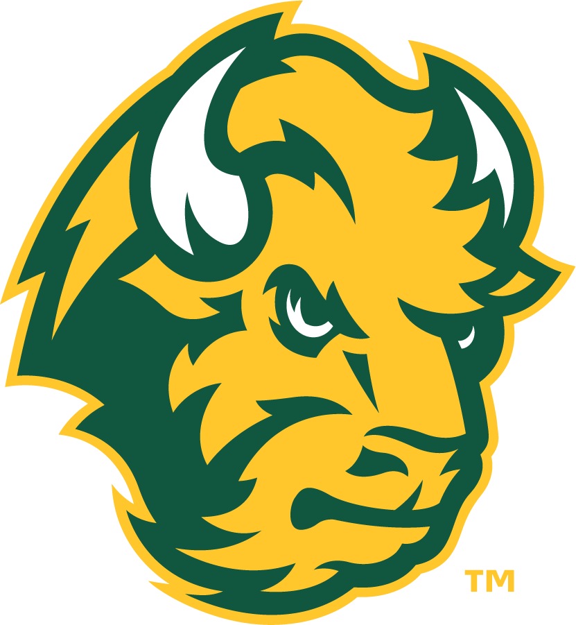
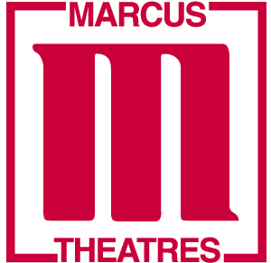
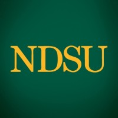
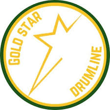
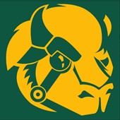
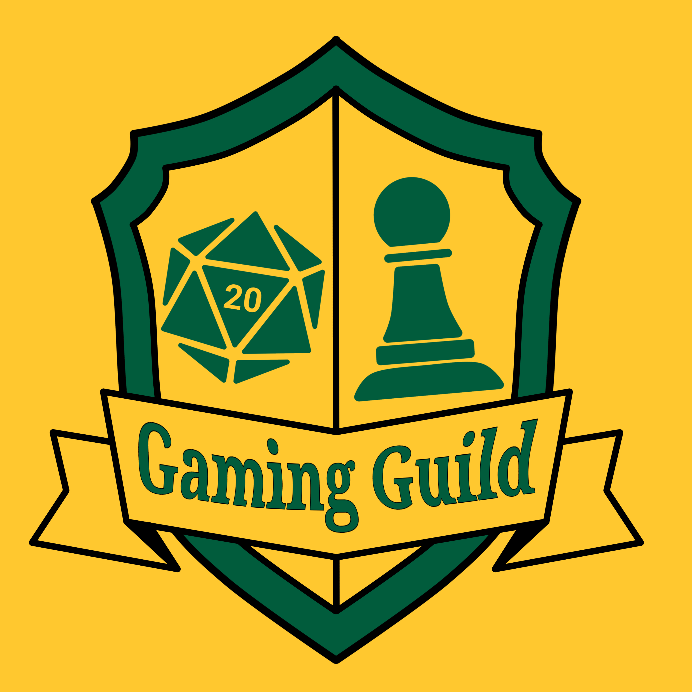

 |
Since the fall of 2023, I have been attending North Dakota State University as a computer science major. Over the course of my education, I have learned programming languages such as C++, Java, Python, and HTML. I have also gained experience working with databases and SQL, and have worked with software development frameworks like Agile and Scrum. In addition to my major, I am minoring in creative writing, as it is something that I enjoy and I believe in the value of having a varied education. |
 |
Since 2021, I have been employed at the Marcus Century Cinema in Fargo, North Dakota as a theater associate. This job has entailed selling concessions and tickets, and ensuring that the theater is kept clean and presentable for guests. |
 |
Since the beginning of 2026, I have been working as an IT support help desk consultant for NDSU. As part of this job, I have assisted with many different issues on many devices and operating systems, and have gained valuable teamwork and customer service skills. |
 |
During my time at NDSU, I have participated in the Gold Star Marching Band as part of the drum line. As part of the GSMB, I've performed at every Bison Football home game, as well as marching in the parade at the Minnesota State Fair. I am playing snare drum for the band this year, and have played cymbals and the tom drum in years prior. |
 |
During my time at NDSU, I have worked with the Bison Robotics team, specifically the NASA Lunabotics challenge. The challenge, hosted by NASA, is to create a robot that can traverse along a lunar surface and move lunar dust. As of now I am the lead programmer on that robot, which utilizes the ROS2 framework. |
 |
I am the current vice president of the NDSU Gaming Guild, a club dedicated to playing Dungeons and Dragons, board games, and card games like Magic: the Gathering. As part of the Gaming Guild leadership team, I have helped with the organization of several successful club events. |